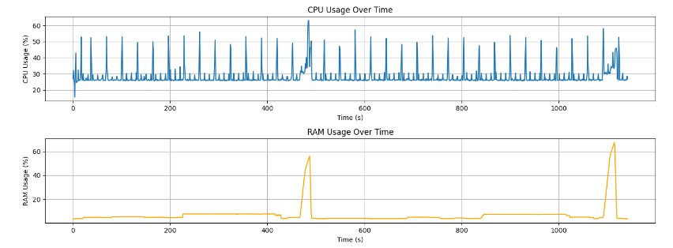
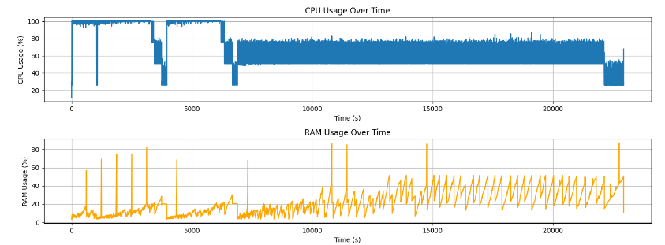
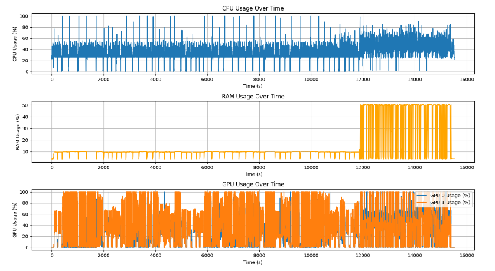
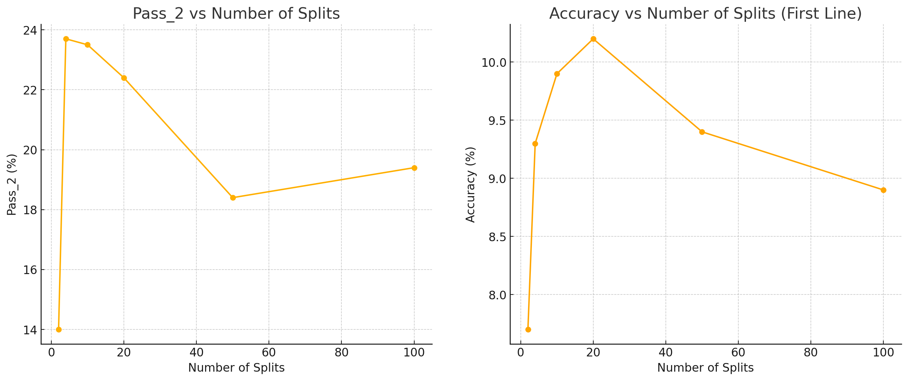
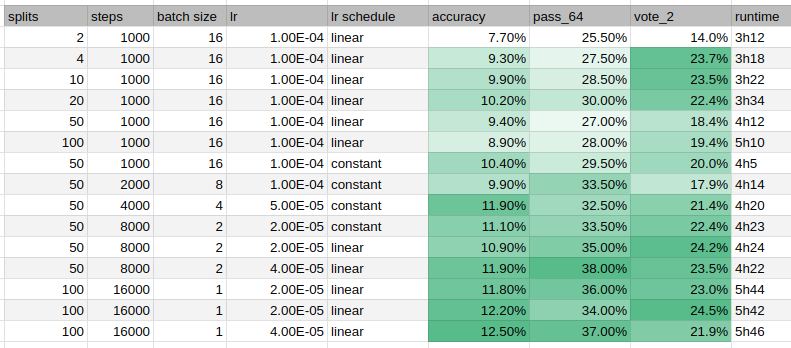

Iteration 13. Single task test-time fine-tuning
29-08-2024
Goal
Can we improve the accuracy of the model if we fine-tune the model for each task independently?
Motivation
Jack Cole says the following in the Machine Learning Street interview:
If you train a model on the re-arc dataset you will get like 1% on the test set. But if you apply their techniques of active inference the score will increase to 23%
This is not what I'm currently seeing. For example when I improved the inference script to be much faster and added voting, I get LB scores of 6 and 5 for Qwen2-0.5B and Qwen2-1.5B, when applying test-time fine-tuning the scores were 5 and 7. Thus my initial score is much better than theirs, but I don't experience that improvement when using test-time fine-tuning.
On recent experiments with the evaluation dataset I could improve from 9% to 15%. Again not even close to what Jack Cole said. TODO: this is an ongoing work, maybe using longer trainings or higher learning rates could improve my results.
Maybe the problem is that so far I have been fine-tuning in the whole test set. That might be suboptimal because the tasks could be contradictory. So maybe it's better to fine-tune for each task independently. Instead of fine-tuning for 1k steps on 100 tasks, fine-tune for 10 steps in each of the 100 tasks.
Other possible explanations:
- It might also be the case that we need a stronger base model, but we leave that for future experiments.
- Maybe my test fine-tuning method is not as good as theirs
Development
The easier way to test this is to fork the Kaggle notebook and make the following modifications.
- Decompose the test file into single task files
- Fine-tune on each of those tasks, generating n saved models
- Make inference with all of the models, each on its task
- Concatenate all the predictions on a single file
The drawback of this approach is that the warmup time of fine-tuning and inference will happen 100 times instead of just one. But I believe there is enough time in the submission to do that.
Another possible problem is that if there is a single task, it might be the case that the training data
is too long for training. I will have to think of how to solve that. Probably the best way is to randomly
get rid of some of the inputs in that case. I could add that option to training. Otherwise the data generator
will be stuck in an infinite loop.
However I have found that if task has both inputs and outputs of 30x30, it might be the case that even
with just one train sample we cannot fit the data in the max_seq_len. Thus I have to think of how
to deal with those cases.
Tasks that are too big for training
No prompt smaller than 4096 tokens for task 25094a63 No prompt smaller than 4096 tokens for task f9d67f8b No prompt smaller than 4096 tokens for task 981571dc No prompt smaller than 4096 tokens for task b9630600
VLLM freezes randomly
On some submissions I have observed some timeouts that did not have sense, the configuration and model were the same as in other successful submissions that only took around 9 hours.
When doing one of the experiments for this iteration I have finally see that the notebook was stuck at inference. Link to notebook run
There is no message in the logs, it simply stops writing logs after 3.5 hours.
To try to solve this I have added a timeout when running inference. If the execution takes more than the timeout it is stopped. I have set it to 5 minutes, but it seems it was too low and 3 submissions have timeout. I have inspected the inference times when doing 64 predictions, and just generating the output tokens took 3m for the worst case. So it makes sense that generating 128 predictions takes more than 5 minutes.
I can hide VLLM logs with export VLLM_LOGGING_LEVEL=ERROR
Parallelize all 2020 solution
Currently I'm running icecuber solution alongside test-time fine-tuning. I cannot run at the same time icecuber and inference because they require more than 50% of RAM and there are crashes.
I have prepared a notebook to measure dsl search resources usage and it turns out that sometimes it more than 60% of RAM. Thus we cannot parallelize with inference either.

I have also measured resources from icecuber to verify ram usage icecuber notebook It uses 80% of RAM sometimes in the execution.

In the other hand my solution has the following resource usage, this is an experiment with the validation set. For 3 hours it is doing the test-time fine-tuning and for 1 hour it makes inference.

It seems that the best solution would be to do all the 2020 solution while the test-time fine-tuning step.
The easiest way would be to create a script that does both 2020 solution parts. Otherwise I should be waiting for one part to stop to run the other part and that would make the code more complex. TODO: maybe run dsl search at the same time as fine-tuning.
Results
Experiment about optimal number of splits

There is a clear positive relation between the number of splits and the accuracy of the model. However we see a decrease after 20 splits. My hypothesis is that if we were using a bigger compute budget we won't see that effect. The total number of training steps is 1000, so for 50 splits that means we will only change the model 20 times.
We are able to reach an accuracy of 10.2% and a pass_2 of 23.7%. On the previous iteration I could only reach 9.4% accuracy fine-tuning for 8k steps, the best experiment with 1k steps reached 7% accuracy. I could reach a pass_2 of 22.7% fine-tuning for 4k steps, and the best experiment with 1k steps reached just 15%. This comparison really validates this single task test-time fine-tuning approach.
Click to see all the metrics
# For a compute budget of 1k steps
# Aggregated metrics:
1 split?
2 splits, 3h12
accuracy: 7.7% correct_pixels: 69.8% max_correct_pixels: 82.5% correct_size: 84.4% any_correct_size: 87.0% pass_64: 25.5% unanswered: 3.0%
accuracy: 7.0% correct_pixels: 71.3% max_correct_pixels: 74.7% correct_size: 85.0% any_correct_size: 86.0% pass_2: 14.0% unanswered: 1.0%
4 splits, 3h18
accuracy: 9.3% correct_pixels: 70.9% max_correct_pixels: 84.5% correct_size: 84.7% any_correct_size: 89.5% pass_64: 27.5% unanswered: 3.8%
accuracy: 11.9% correct_pixels: 73.3% max_correct_pixels: 78.6% correct_size: 85.9% any_correct_size: 87.9% pass_2: 23.7% unanswered: 0.0%
10 splits, 3h22
accuracy: 9.9% correct_pixels: 70.6% max_correct_pixels: 82.1% correct_size: 84.1% any_correct_size: 87.0% pass_64: 28.5% unanswered: 2.9%
accuracy: 11.7% correct_pixels: 74.2% max_correct_pixels: 78.2% correct_size: 86.2% any_correct_size: 86.7% pass_2: 23.5% unanswered: 0.5%
20 splits, 3h34
accuracy: 10.2% correct_pixels: 71.0% max_correct_pixels: 84.1% correct_size: 84.5% any_correct_size: 89.0% pass_64: 30.0% unanswered: 3.5%
accuracy: 11.2% correct_pixels: 75.2% max_correct_pixels: 80.8% correct_size: 86.7% any_correct_size: 88.8% pass_2: 22.4% unanswered: 0.5%
50 splits, 4h12
accuracy: 9.4% correct_pixels: 71.2% max_correct_pixels: 81.8% correct_size: 85.4% any_correct_size: 88.0% pass_64: 27.0% unanswered: 2.8%
accuracy: 9.2% correct_pixels: 75.7% max_correct_pixels: 79.1% correct_size: 88.3% any_correct_size: 88.8% pass_2: 18.4% unanswered: 0.0%
100 splits, 5h10
accuracy: 8.9% correct_pixels: 70.0% max_correct_pixels: 82.4% correct_size: 84.6% any_correct_size: 88.0% pass_64: 28.0% unanswered: 3.1%
accuracy: 9.7% correct_pixels: 73.5% max_correct_pixels: 76.9% correct_size: 87.2% any_correct_size: 87.8% pass_2: 19.4% unanswered: 0.0%
50 splits, constant lr, 4h5
accuracy: 10.4% correct_pixels: 70.3% max_correct_pixels: 82.9% correct_size: 83.9% any_correct_size: 87.0% pass_64: 29.5% unanswered: 4.0%
accuracy: 10.0% correct_pixels: 72.2% max_correct_pixels: 76.3% correct_size: 85.0% any_correct_size: 87.0% pass_2: 20.0% unanswered: 1.0%
Optimization for 50 splits
Click to see all the metrics
qwen2-0.5b-instruct/5
50 splits, 1000 steps, linear lr 1e-4, 4h12
https://www.kaggle.com/code/ironbar/single-task-test-time-fine-tuning-for-arc24?scriptVersionId=194795197
accuracy: 9.4% correct_pixels: 71.2% max_correct_pixels: 81.8% correct_size: 85.4% any_correct_size: 88.0% pass_64: 27.0% unanswered: 2.8%
accuracy: 9.2% correct_pixels: 75.7% max_correct_pixels: 79.1% correct_size: 88.3% any_correct_size: 88.8% pass_2: 18.4% unanswered: 0.0%
50 splits, 1000 steps, constant lr 1e-4 bs16, 4h5
https://www.kaggle.com/code/ironbar/single-task-test-time-fine-tuning-for-arc24?scriptVersionId=194876119
accuracy: 10.4% correct_pixels: 70.3% max_correct_pixels: 82.9% correct_size: 83.9% any_correct_size: 87.0% pass_64: 29.5% unanswered: 4.0%
accuracy: 10.0% correct_pixels: 72.2% max_correct_pixels: 76.3% correct_size: 85.0% any_correct_size: 87.0% pass_2: 20.0% unanswered: 1.0%
val qwen2-0.5b/5 50split 2k_step_bs8 1e-4_lr_cte (halve batch size to 8 and duplicate steps to 2000), 4h14, 3h8 fine-tuning (1h inference, so around 1-2 minutes per split)
accuracy: 9.9% correct_pixels: 69.0% max_correct_pixels: 80.8% correct_size: 82.0% any_correct_size: 84.5% pass_n: 33.5% unanswered: 3.2%
accuracy: 8.9% correct_pixels: 72.8% max_correct_pixels: 76.1% correct_size: 85.2% any_correct_size: 85.7% pass_2: 17.9% unanswered: 0.0%
halve again batch size and learning rate, 80 steps per training
val qwen2-0.5b/5 50split 4k_step_bs4 5e-5_lr_cte, 4h20, 3h11 fine-tuning
accuracy: 11.9% correct_pixels: 70.4% max_correct_pixels: 83.7% correct_size: 83.2% any_correct_size: 87.5% pass_n: 32.5% unanswered: 3.5%
accuracy: 10.7% correct_pixels: 73.4% max_correct_pixels: 78.9% correct_size: 85.5% any_correct_size: 87.8% pass_2: 21.4% unanswered: 0.8%
160 steps per training
val qwen2-0.5b/5 50split 8k_step_bs2 2e-5_lr_cte, 4h23, 3h15 fine-tuning
https://www.kaggle.com/code/ironbar/single-task-test-time-fine-tuning-for-arc24?scriptVersionId=195770629
accuracy: 11.1% correct_pixels: 71.4% max_correct_pixels: 84.5% correct_size: 85.0% any_correct_size: 88.0% pass_n: 33.5% unanswered: 3.3%
accuracy: 11.2% correct_pixels: 74.9% max_correct_pixels: 79.7% correct_size: 86.7% any_correct_size: 88.8% pass_2: 22.4% unanswered: 0.5%
val qwen2-0.5b/5 50split 8k_step_bs2 2e-5_lr_lin, 4h24, 3h16 fine-tuning, 1h10 inference
https://www.kaggle.com/code/ironbar/single-task-test-time-fine-tuning-for-arc24?scriptVersionId=195800246
accuracy: 10.9% correct_pixels: 71.2% max_correct_pixels: 84.1% correct_size: 84.9% any_correct_size: 88.0% pass_n: 35.0% unanswered: 3.1%
accuracy: 12.1% correct_pixels: 73.7% max_correct_pixels: 79.4% correct_size: 85.6% any_correct_size: 87.9% pass_2: 24.2% unanswered: 1.3%
val qwen2-0.5b/5 50split 8k_step_bs2 4e-5_lr_lin, 4h22
accuracy: 11.9% correct_pixels: 71.5% max_correct_pixels: 83.1% correct_size: 84.7% any_correct_size: 87.0% pass_n: 38.0% unanswered: 3.3%
accuracy: 11.7% correct_pixels: 73.2% max_correct_pixels: 78.5% correct_size: 85.2% any_correct_size: 87.8% pass_2: 23.5% unanswered: 1.0%
# Go down to batch size 1, and use 100 splits
val qwen2-0.5b/5 100split 16k_step_bs1 2e-5_lr_lin, 5h44, 3h55 fine-tuning 1h50 inference
https://www.kaggle.com/code/ironbar/single-task-test-time-fine-tuning-for-arc24?scriptVersionId=196574355
accuracy: 11.8% correct_pixels: 71.6% max_correct_pixels: 84.6% correct_size: 84.9% any_correct_size: 89.5% pass_n: 36.0% unanswered: 3.0%
accuracy: 11.5% correct_pixels: 75.9% max_correct_pixels: 81.2% correct_size: 87.2% any_correct_size: 88.8% pass_n: 23.0% unanswered: 1.0%
# Increase max_seq_len to 5120, 5h42
https://www.kaggle.com/code/ironbar/single-task-test-time-fine-tuning-for-arc24?scriptVersionId=196575579
accuracy: 12.2% correct_pixels: 72.1% max_correct_pixels: 84.9% correct_size: 85.2% any_correct_size: 88.5% pass_n: 34.0% unanswered: 2.9%
accuracy: 12.2% correct_pixels: 74.7% max_correct_pixels: 81.8% correct_size: 87.0% any_correct_size: 89.8% pass_n: 24.5% unanswered: 1.3%
val qwen2-0.5b/5 100split step16k_bs1 4e-5lr_lin
https://www.kaggle.com/code/ironbar/single-task-test-time-fine-tuning-for-arc24?scriptVersionId=196610194
accuracy: 12.5% correct_pixels: 72.0% max_correct_pixels: 84.1% correct_size: 84.6% any_correct_size: 88.5% pass_n: 37.0% unanswered: 3.0%
accuracy: 11.0% correct_pixels: 75.3% max_correct_pixels: 79.4% correct_size: 86.7% any_correct_size: 87.8% pass_n: 21.9% unanswered: 0.5%37

| splits | steps | batch size | lr | lr schedule | accuracy | pass_64 | vote_2 | runtime |
|---|---|---|---|---|---|---|---|---|
| 2 | 1000 | 16 | 1.00E-04 | linear | 7.70% | 25.50% | 14.0% | 3h12 |
| 4 | 1000 | 16 | 1.00E-04 | linear | 9.30% | 27.50% | 23.7% | 3h18 |
| 10 | 1000 | 16 | 1.00E-04 | linear | 9.90% | 28.50% | 23.5% | 3h22 |
| 20 | 1000 | 16 | 1.00E-04 | linear | 10.20% | 30.00% | 22.4% | 3h34 |
| 50 | 1000 | 16 | 1.00E-04 | linear | 9.40% | 27.00% | 18.4% | 4h12 |
| 100 | 1000 | 16 | 1.00E-04 | linear | 8.90% | 28.00% | 19.4% | 5h10 |
| 50 | 1000 | 16 | 1.00E-04 | constant | 10.40% | 29.50% | 20.0% | 4h5 |
| 50 | 2000 | 8 | 1.00E-04 | constant | 9.90% | 33.50% | 17.9% | 4h14 |
| 50 | 4000 | 4 | 5.00E-05 | constant | 11.90% | 32.50% | 21.4% | 4h20 |
| 50 | 8000 | 2 | 2.00E-05 | constant | 11.10% | 33.50% | 22.4% | 4h23 |
| 50 | 8000 | 2 | 2.00E-05 | linear | 10.90% | 35.00% | 24.2% | 4h24 |
| 50 | 8000 | 2 | 4.00E-05 | linear | 11.90% | 38.00% | 23.5% | 4h22 |
| 100 | 16000 | 1 | 2.00E-05 | linear | 11.80% | 36.00% | 23.0% | 5h44 |
| 100 | 16000 | 1 | 2.00E-05 | linear | 12.20% | 34.00% | 24.5% | 5h42 |
| 100 | 16000 | 1 | 4.00E-05 | linear | 12.50% | 37.00% | 21.9% | 5h46 |
Using 100 splits, batch size 1 and linear learning rate schedule we have improved the accuracy from 7.7% to 12.5% and vote_2 from 14% to 21.9%.
Conclusion
New best score of 28! using an ensemble
Next steps
TODO
- Add the option to the train script to remove train samples to fit training sequence length
- I have found that sometimes a task would not fit into max seq length. How to detect that case and what to do?
- Measure the effect of using the feature above in a normal training. Done on previous iteration, unclear effect.
- Optimize the parametrization of single task ttft (stttft) (learning rate and steps) Does it improve over the baseline?
- Try with constant learning rate schedule, might be better for short fine-tunings.
- Can I improve the leaderboard score?
- Add logging to better analyze the problems, reduce verbosity
- Can I hide VLLM loggings? Yes: export VLLM_LOGGING_LEVEL=ERROR
- Better think of the timeout feature. Example of the feature working successfully: https://www.kaggle.com/code/ironbar/v2-single-task-test-time-fine-tuning-for-arc24?scriptVersionId=196707552
- Can I optimize the submission speed?
- Maybe reduce VLLM RAM usage. https://docs.vllm.ai/en/latest/automatic_prefix_caching/apc.html
- Maybe use unsloth and change to single P100 GPU.
- Can I increase the max_seq_len? That might preventing me from training on some tasks.
- Parallelize all 2020 solution so it does not add any extra time, how much RAM uses the second approach?